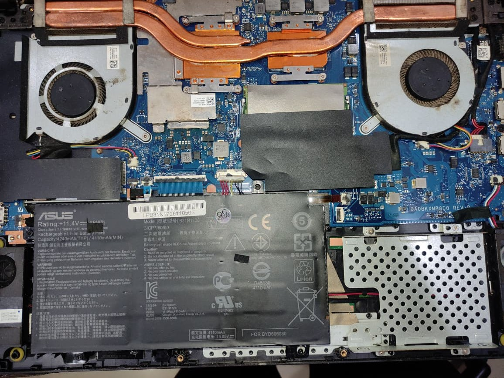

Hi, I'm Raihan Fatih Dzaky IT Support Specialist.
based in Indonesia.

About Me
Sebagai lulusan Teknik Informatika, saya memiliki kemampuan analitis dan pemecahan masalah yang kuat serta antusiasme tinggi untuk terus belajar dan mengembangkan kompetensi di bidang teknologi informasi. Saya terbiasa bekerja secara kolaboratif dalam tim, mampu berkomunikasi secara efektif, dan cepat beradaptasi dengan lingkungan maupun teknologi baru. Saya memiliki ketertarikan yang seimbang dalam pengembangan perangkat lunak (software) maupun pengelolaan perangkat keras (hardware), analisis sistem, pengolahan data, serta integrasi teknologi untuk menghasilkan solusi yang efisien dan inovatif. Dengan semangat belajar yang tinggi dan perhatian terhadap detail, saya siap memberikan kontribusi positif dalam mendukung pengembangan solusi teknologi yang tangguh serta terus meningkatkan kemampuan teknis dan profesional.
Hardware & Peripheral Troubleshooting - Perakitan PC/laptop, upgrade komponen, maintenance & perbaikan fisik printer (Epson/HP/Brother), serta pemulihan data (data backup & recovery).
Operating System & System Maintenance - Instalasi, konfigurasi, dan troubleshooting OS (Windows & Linux), pengelolaan driver, pembaruan sistem, serta optimalisasi performa lunak.
Network & IoT System Integration - Dasar konfigurasi jaringan lokal (LAN/Wi-Fi), troubleshooting konektivitas, serta integrasi sistem berbasis mikrokontroler/IoT (ESP32).
Software & Database Administration - Pengelolaan aplikasi pendukung operasional, manajemen database (SQLite/MySQL), pembuatan sistem/form otomatis, dan dukungan aplikasi internal.
2nd Place Winner - CodeFest Google Developer Student Clubs (GDSC) Medan (Perbaikan Medan Games) - 2024
IT Support - Wiljon Komputer 2026 - current
Asisten Laboratorium - STMIK Kaputama 2023 - 2025
Sarjana Komputer (Teknik Informatika) - STMIK Kaputama 2022 - 2026
Pemasaran Digital Dasar - BBPSDMP Medan 2025
Asisten Laboratorium Komputer - STMIK Kaputama 2023-2025
My Services
Solusi handal untuk perawatan hardware, perbaikan perangkat, dan dukungan sistem IT.
IT Support & Hardware Maintenance
Layanan perbaikan, perawatan, dan pemeliharaan perangkat keras komputer, laptop, serta troubleshooting sistem operasional secara menyeluruh.
Printer & Peripheral Repair
Jasa perbaikan khusus printer (Epson, HP, Brother, dll), instalasi driver, pemeliharaan perangkat pendukung, serta pemulihan data (data recovery).
Network Integration
Konfigurasi dasar jaringan komputer lokal (LAN/Wi-Fi), troubleshooting koneksi
Software & System Deployment
Instalasi sistem operasi (Windows/Linux), manajemen database ringan (SQLite/MySQL), serta konfigurasi aplikasi pendukung kerja.
My Latest Project
Kumpulan proyek hardware, sistem IoT, aplikasi mobile, dan solusi teknis.

IoT System
Smart Street Lighting (ESP32)
Perancangan sistem pencahayaan jalan otomatis berbasis mikrokontroler dengan sensor lingkungan untuk efisiensi energi.

Hardware Repair & Maintenance
Laptop & PC Hardware Repair
Servis perbaikan fisik laptop, perakitan PC, upgrade komponen, pembersihan berkala, serta pemulihan data (data recovery).
CCTV & Network
CCTV Installation & Setup
Pemasangan, konfigurasi, dan perawatan kamera pengawas (CCTV) serta pengaturan jaringan pendukung.